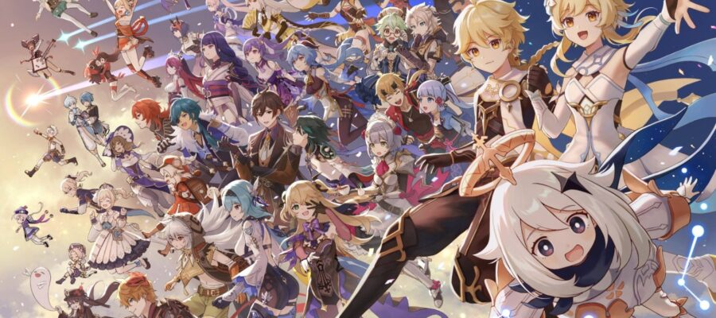
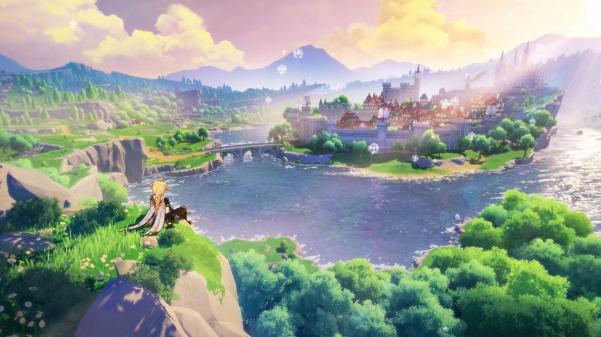
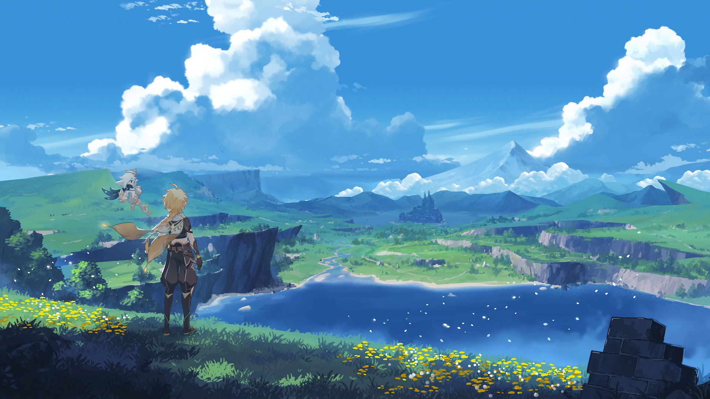
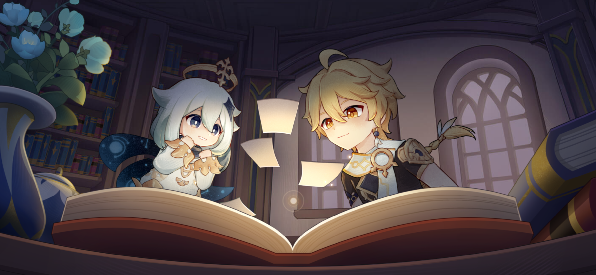

What is
Genshin Impact?
What's this game about?
Genshin Impact is an action-adventure game from miHoYo(HoYoverse) Chinese studio with an open world and RPG elements.
The story takes place in the fantasy world of Teyvat, where seven natural elements converge. At the beginning,
players take on the role of a traveler who wants to find his lost twin, and in the end tries to uncover the secrets
and mysteries of the world he finds himself in. Meet the first and main plus of the game: the plot is really
interesting, filled with both beautiful and touching scenes and mystery-intrigue-exploration.
Such a gripping and engaging scenario is rare for such projects. More often than not, players of
online-RPGs skip the cutscenes altogether and poke at the dialogues at random. But not in case of Genshin Impact,
you go here for the story.
Bonus:
In addition to the main storyline, the game also has fun mini-quests, such as gliding competitions, cooking lessons, and even playing the lyre. These help add variety to an already intense experience. All in all, there is always something to do in Genshin, and you'll have to spend a lot of time to get to the "got bored" mark.
And five more reasons, besides the plot, why Genshin Impact is good
№ 1. Vivid heroes
As the main story progresses, you can meet colorful characters who help the player
on his journey. Each has a unique personality and the ability to control one of
the seven elements. They also have their own special skills and roles that they can play during the battle.
What players get: First, the opportunity to choose a favorite among dozens of
very different but wonderful in their variety of heroes. For many children, this
is a therapeutic and useful move: to work through their tasks together with a character
who clings to something.
Secondly, strategy: in order to select an effective squad, you will have to be patient and deep into the "matchmaking" game. The study of such a complicated mechanism is akin to a learning task, only a hundred times more interesting. And third, the plot raises serious themes - the importance of family (and not always with blood kinship), friendship, loyalty and justice. And all the characters, in one way or another, present these healthy ideas through dialogue and action.
№ 2. Beautiful World
Genshin Impact is a dynamic role-playing game with a vast world full of magnificent landscapes that you can and should explore. And you'll have to do it in a variety of ways: running, flying, climbing mountains, swimming, and solving puzzles. Besides, you can't spend 30 seconds in Genshin without tripping over some glowing object or a mysterious chest.
From this spectacular plus can emerge one, but still important minus: you need a good smartphone, tablet or PC to play. If the child's gadget does not "pull" Genshin well, it can become a kind of tragedy and the backlog of requests for a new device. PC or laptop that will cope with the game, too, "old" should not be.
And also the player's phone will constantly run out of power, get over it and get an extra charger to carry with you. And external - "bank" - the battery. You can have a couple.
№ 3. The game is free to play - everywhere
Of course, very conventionally - there is a donation in Genshin Impact, for which you can get a chance to "knock out" the necessary characters. But still, you don't have to pay to play - the game can be downloaded for free on any platform. Most often players prefer versions for smartphones, tablets and PCs, but Genshin can also be played on PlayStation.
№ 4. Pleasant combat system
.jpg)
Each character has elemental skills based on the elements, which can be combined to create
more advanced effects. For example, hitting an enemy with water and then ice instantly
freezes him. In addition to magic attacks, you can use normal punches, dodges, and special
moves. Also, the game allows you to switch between different characters, which helps to
train not only reflexes, but also the skill of strategic planning.
And physics is a little bit tougher for players: in order to fight really well you'll
have to learn the principles of interaction of fire, water, ice, and electricity, albeit at a simple level.
№ 5. Continuous development
As players unlock characters, they can improve and develop them. Players have the ability to raise the base level and characteristics of characters, their special talents and abilities, and weapons, which can also be upgraded. A lot of time is spent searching for materials and building teams, trying out new sets of artifacts, and mastering the updates that are regularly released by the developers. All of these processes faithfully supply players with a dose of dopamine for small achievements and serve as a calming ritual for those people who need it.